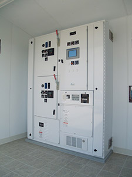

Welcome to ArcSafe® Pump Control Center (PCC)
The ArcSafe® Pump Control Center is available as a standalone unit to be installed in an existing structure or as an integrated unit with Arrow prefabricated “walk-in” stations. Our unique design makes it easier to comply with electrical safety regulations (CFR 1910 Subpart S) and standards (NFPA 70E). The compartmentalization of the ArcSafe® panel keeps line voltage away from anyone who may need to get into cabinets.
Brochure and Suggested Specifications are available on the Product Information page. For more information about Arrow Prefabricated Pumping Stations, please visit ArrowStations.com. ArcSafe® and Arrow products are manufactured by Starnet Technologies, Inc.
Standards and Approvals
- U.L. Listed
- National Electric Code
- Sensor Connections UL 689A